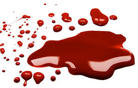
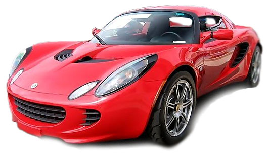

Röd!
Röd är en väldigt stark färg som syns väldigt tydligt färgbeteckningssystemet NCS är röd en av sex elementarfärger och har beteckningen R.
Röd övergår mot orange vid ca 640 nanometer (nm) av monokromatiskt ljus och övergår mot infrarött vid drygt 700 nm. Rött används ofta som signal- och symbolfärg och röda färger brukar förknippas med starka känslor, kraft och energi. I den västerländska kulturen kan rött till exempel symbolisera både kärlek, synd och revolution och i asiatisk kultur symboliserar rött ofta lycka, glädje och framgång.
men kan också vara en ond färg som kan betyda blod.

